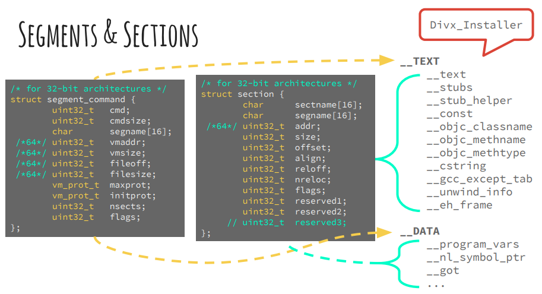
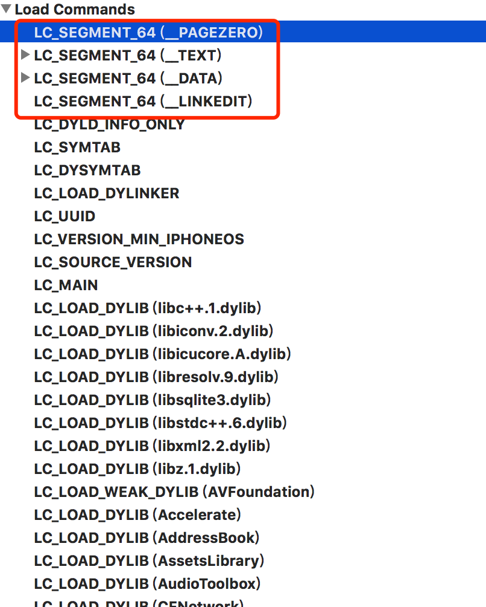
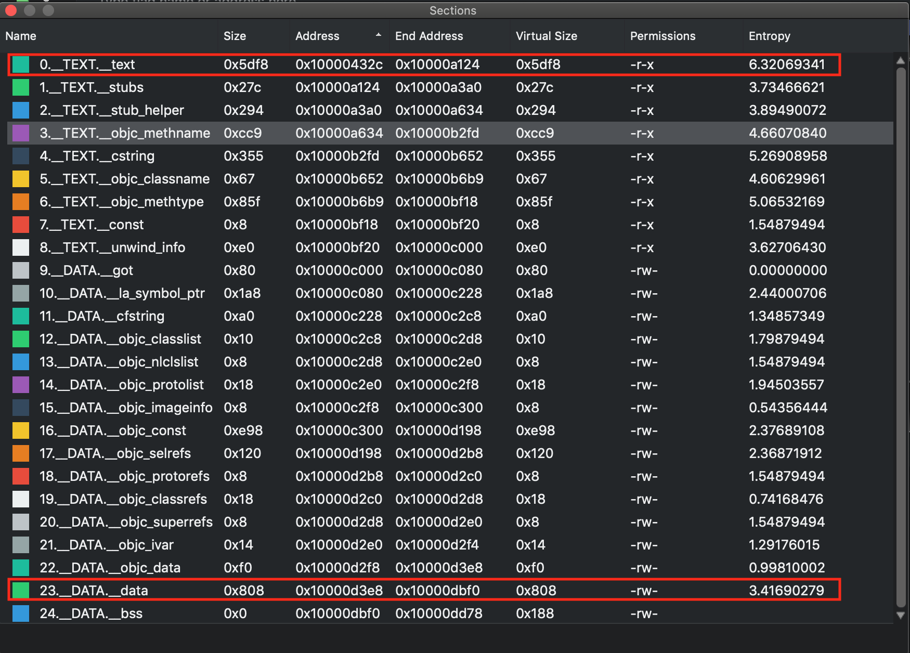
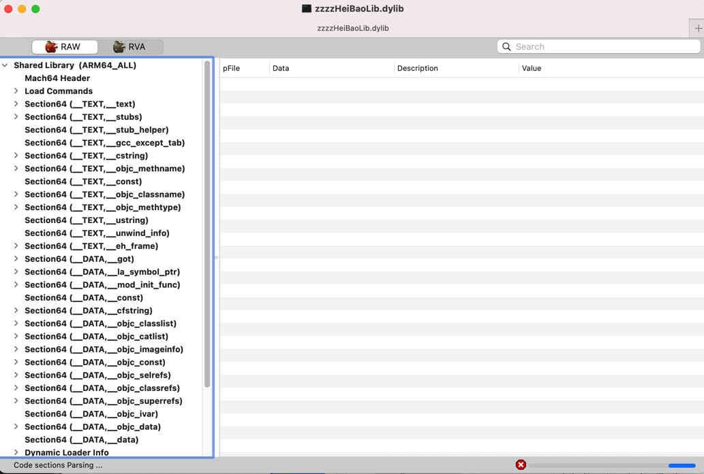

segment
- Mach-O中包含1个或多个segment
- 一个segment中包含0或多个section
- segment和sectoin的基本定义
- 
常见segment
- 概述
- 最常用的segment：
__PAGEZERO、__TEXT、__DATA、__LINKEDIT- 举例
- MachOView查看某Mach-O的效果
- 
- MachOView查看某Mach-O的效果
- 举例
- 最常用的segment：
- 详解
__PAGEZERO- The static linker creates a
__PAGEZEROsegment as the first segment of an executable file. This segment is located at virtual memory location 0 and has no protection rights assigned, the combination of which causes accesses to NULL, a common C programming error, to immediately crash. The__PAGEZEROsegment is the size of one full VM page for the current architecture (for Intel-based and PowerPC-based Macintosh computers, this is 4096 bytes or 0x1000 in hexadecimal). Because there is no data in the__PAGEZEROsegment, it occupies no space in the file (the file size in the segment command is 0).
- The static linker creates a
__TEXT- The
__TEXTsegment contains executable code and other read-only data. To allow the kernel to map it directly from the executable into sharable memory, the static linker sets this segment’s virtual memory permissions to disallow writing. When the segment is mapped into memory, it can be shared among all processes interested in its contents. (This is primarily used with frameworks, bundles, and shared libraries, but it is possible to run multiple copies of the same executable in OS X, and this applies in that case as well.) The read-only attribute also means that the pages that make up the__TEXTsegment never need to be written back to disk. When the kernel needs to free up physical memory, it can simply discard one or more__TEXTpages and re-read them from disk when they are next needed.
- The
__DATA- The
__DATAsegment contains writable data. The static linker sets the virtual memory permissions of this segment to allow both reading and writing. Because it is writable, the__DATAsegment of a framework or other shared library is logically copied for each process linking with the library. When memory pages such as those making up the__DATAsegment are readable and writable, the kernel marks them copy-on-write; therefore when a process writes to one of these pages, that process receives its own private copy of the page.
- The
__OBJC- The __OBJC segment contains data used by the Objective-C language runtime support library.
__IMPORT- The __IMPORT segment contains symbol stubs and non-lazy pointers to symbols not defined in the executable. This segment is generated only for executables targeted for the IA-32 architecture.
__LINKEDIT- The __LINKEDIT segment contains raw data used by the dynamic linker, such as symbol, string, and relocation table entries.
主要segment的section
- segment段
__TEXT段- Section节
__text: The compiled machine code for the executable__const: The general constant data for the executable__cstring: Literal string constants (quoted strings in source code)__picsymbol_stub: Position-independent code stub routines used by the dynamic linker (dyld)
- Section节
__DATA段- Section节
__data: Initialized global variables (for exampleint a = 1;orstatic int a = 1;)__const: Constant data needing relocation (for example,char * const p = "foo";)__bss: Uninitialized static variables (for example,static int a;)__common: Uninitialized external globals (for example,int a;outside function blocks)__dyld: A placeholder section, used by the dynamic linker__la_symbol_ptr: Lazy symbol pointers. Symbol pointers for each undefined function called by the executable__nl_symbol_ptr: Non lazy symbol pointers. Symbol pointers for each undefined data symbol referenced by the executable
- Section节
举例
- 举例1
- 
- 举例2
- MachOView查看zzzzHeiBaoLib.dylib
- 
- MachOView查看zzzzHeiBaoLib.dylib
- 举例3
# Sections: # Address Size Segment Section 0x100001DC0 0x00A38B42 __TEXT __text 0x100A3A902 0x00001C9E __TEXT __stubs 0x100A3C5A0 0x0000204A __TEXT __stub_helper 0x100A3E5EC 0x000231B0 __TEXT __gcc_except_tab 0x100A617A0 0x000178D0 __TEXT __const 0x100A79070 0x0008A5DA __TEXT __cstring 0x100B0364A 0x0005F462 __TEXT __objc_methname 0x100B62AAC 0x00008794 __TEXT __objc_classname 0x100B6B240 0x0003B4EB __TEXT __objc_methtype 0x100BA672C 0x00001742 __TEXT __ustring 0x100BA7E6E 0x00000172 __TEXT __entitlements 0x100BA7FE0 0x0000037B __TEXT __dof_RACSignal 0x100BA835B 0x000002E8 __TEXT __dof_RACCompou 0x100BA8644 0x00012964 __TEXT __unwind_info 0x100BBAFA8 0x00000058 __TEXT __eh_frame 0x100BBB000 0x00000008 __DATA __nl_symbol_ptr 0x100BBB008 0x00000BD8 __DATA __got 0x100BBBBE0 0x00002628 __DATA __la_symbol_ptr 0x100BBE208 0x00000070 __DATA __mod_init_func 0x100BBE280 0x0001CEE0 __DATA __const 0x100BDB160 0x00039CA0 __DATA __cfstring 0x100C14E00 0x00002B00 __DATA __objc_classlist 0x100C17900 0x000000A0 __DATA __objc_nlclslist 0x100C179A0 0x00000680 __DATA __objc_catlist 0x100C18020 0x000000D0 __DATA __objc_nlcatlist 0x100C180F0 0x00000638 __DATA __objc_protolist 0x100C18728 0x00000008 __DATA __objc_imageinfo 0x100C18730 0x001252F8 __DATA __objc_const 0x100D3DA28 0x000150B0 __DATA __objc_selrefs 0x100D52AD8 0x00000150 __DATA __objc_protorefs 0x100D52C28 0x00002A38 __DATA __objc_classrefs 0x100D55660 0x000019F8 __DATA __objc_superrefs 0x100D57058 0x000085E8 __DATA __objc_ivar 0x100D5F640 0x0001AE00 __DATA __objc_data 0x100D7A440 0x0000CC70 __DATA __data 0x100D870B0 0x00004698 __DATA __bss 0x100D8B750 0x00001298 __DATA __common